각 화별로 폴더 정리 및 원클릭 ZIP·컷별 저장, 인스타·쓰레드 본문 복사가 가능합니다.
"내가 혼자 할 거야!! 엄마 저리 가!!" 😭 퇴근하고 돌아오면 단추도 혼자 끼우겠다, 물도 혼자 따르겠다며 고집부리는 만 3세 아이 때문에 한숨 쉬신 적 있나요? 사실 이 시기 아이의 고집은 엄마를 힘들게 하려는 반항이 아니라, 대뇌 운동피질의 30%와 연결된 【손끝 소근육 민감기】가 열렸다는 아주 기특한 신호랍니다! 🌱 ✅ 오늘 저녁부터 이렇게 바꿔보세요! 1️⃣ 비싼 교구 대신 주방 나무 집게·물티슈 캡·안전가위로 손끝 힘 길러주기 2️⃣ 서툴러도 대신 해주지 않고 딱 10초만 미소 지으며 기다려주기 3️⃣ 낮에 손끝과 전두엽을 충분히 쓴 아이가 밤 10시 깊은 잠에서 키도 쑥쑥 자랍니다! 👉 우리 아이 개월 수별 소근육·두뇌 발달 밸런스 & 숨은 키 백분위 1분 무료 진단은 프로필 링크( https://truthofmarket.com )에서 바로 확인해 보세요! #육아툰 #인스타툰 #육아공감 #만3세발달 #소근육발달 #몬테소리 #유아교구 #워킹맘육아 #엄마표놀이 #키즈핏 【쓰레드 본문 (그대로 복사해서 이미지 4장과 함께 올리세요)】 퇴근하고 집에 오면 "내가 혼자 할 거야!!" 하며 단추 하나 끼우는 데 10분씩 걸리는 만 2~4세 아이… 😅 혼내야 할지 기다려줘야 할지 매일 갈등이었는데, 이게 대뇌 운동피질 30%가 열리는 '손끝 소근육 민감기' 신호였더라고요! 어머님들은 요즘 아이가 "내가 혼자 할래!" 제일 많이 외치는 순간이 언제인가요? 👇 ────────────────────────────────── 【쓰레드 첫 번째 고정 대댓글 (업로드 직후 내 글에 댓글로 달아두세요)】 우리 아이 개월 수에 딱 맞는 소근육·두뇌 발달 단계와 키 백분위는 여기서 회원가입 없이 1분 만에 무료로 뽑아보실 수 있어요 😊 👉 https://truthofmarket.com
"단순 연산은 100점인데 왜 세 줄짜리 문장제 문제만 나오면 별표(★)부터 칠까?" 🤔 책을 덜 읽어서 국어 문해력이 부족한 걸까 고민하셨다면 주목해 주세요! 인지뇌과학 연구에 따르면, 초등 아이가 문장제 수학에서 막히는 가장 큰 원인은 머릿속 작은 칠판인 【전두엽 작업기억(Working Memory) 과부하】 때문입니다. 숫자와 조건을 머릿속으로만 암산하려다 앞줄 조건을 잊어버리는 것이죠! ✅ 오늘 저녁 수학 문제집 풀 때 딱 3가지만 해보세요! 1️⃣ 구하는 것에 동그라미(○), 핵심 조건에 밑줄(ㅡ) 긋기 2️⃣ 식부터 쓰지 말고 종이 여백에 간단한 상자·막대 그림 그리기 3️⃣ 정답 맞힌 뒤 "왜 이 식을 세웠는지" 엄마에게 30초 설명하기(하브루타) 👉 우리 아이 5대 학습 역량 지수(문해력·수리력·작업기억·메타인지) 1분 무료 진단은 프로필 링크( https://truthofmarket.com )에서 확인하세요! #초등수학 #문장제수학 #서술형수학 #초등공부법 #작업기억 #메타인지 #하브루타 #초등맘 #교육툰 #키즈핏 【쓰레드 본문 (그대로 복사해서 이미지 4장과 함께 올리세요)】 연산 학습지는 다 맞으면서 문제가 세 줄만 넘어가면 읽지도 않고 "엄마 이거 더하는 거야 빼는 거야?" 물어보는 아이… 😂 국어 문제인 줄 알았더니 머릿속 칠판(전두엽 작업기억) 용량이 꽉 차서 생기는 현상이래요! 여백에 상자 그림 하나만 그리게 해도 정답률이 2배 올라갑니다. 초등 맘님들, 요즘 아이 수학 봐주실 때 제일 혈압 오르는(?) 단원이 어디인가요? 👇 ────────────────────────────────── 【쓰레드 첫 번째 고정 대댓글 (업로드 직후 내 글에 댓글로 달아두세요)】 우리 아이 전두엽 작업기억·수리추론·문해력 5대 학습 역량(LQ) 점수랑 맞춤 공부법은 여기서 1분 만에 무료로 확인하실 수 있어요! 👉 https://truthofmarket.com
"키 크라고 밤마다 우유 챙겨줬는데, 오히려 성장호르몬을 방해하고 있었다고?!" 😱 아이 키 때문에 고민이신 부모님들이 가장 많이 하시는 실수 2가지! 1️⃣ 우유를 마시면 배가 꾸르륵거리는 아이(유당불내증)는 칼슘이 흡수되지 못하고 배출됩니다. 2️⃣ 잠들기 직전 먹는 우유·과일·야식은 인슐린을 높여 밤 10시~새벽 2시에 분비되는 【성장호르몬(GH) 스위치】를 꺼버립니다! ✅ 오늘 밤부터 시작하는 '숨은 키 +7cm' 골든타임 루틴 • 저녁 식사 때 두부·잔멸치·치즈 + 칼슘·비타민D3·아연으로 뼈 재료 채우기 • 취침 2시간 전부터 공복 유지하기 • 밤 9시 40분, 무릎·종아리 하체 성장판 5분 스트레칭 후 10시 정각 암막 소등! 👉 질병관리청 성장도표 기준 우리 아이 정확한 키 백분위 & 부모 유전키 대비 3단 예상키는 프로필 링크( https://truthofmarket.com )에서 1분 만에 무료로 확인하세요! #아이키성장 #어린이키성장 #키크는습관 #성장호르몬 #밤10시수면 #어린이칼슘 #성장판스트레칭 #초등키성장 #육아툰 #키즈핏 【쓰레드 본문 (그대로 복사해서 이미지 4장과 함께 올리세요)】 키 크라고 자기 직전에 우유나 과일 챙겨주시는 부모님 계신가요? 😭 소아내분비학 논문을 보니 잠들기 2시간 전 당분·음식이 들어오면 인슐린이 올라가서 밤 10시 성장호르몬 분비가 멈춘다고 해요! 오늘부터 밤 9시 40분 하체 성장판 마사지 + 10시 공복 칼퇴근 수면 도전합니다 💪 어머님들 아이들은 보통 몇 시에 잠드나요? 👇 ────────────────────────────────── 【쓰레드 첫 번째 고정 대댓글 (업로드 직후 내 글에 댓글로 달아두세요)】 질병관리청 성장도표 기준 우리 아이 정확한 키·몸무게 백분위랑 부모 유전키(MPH) 대비 최대 잠재키는 여기서 1분 만에 무료로 계산해 보실 수 있어요! 👉 https://truthofmarket.com
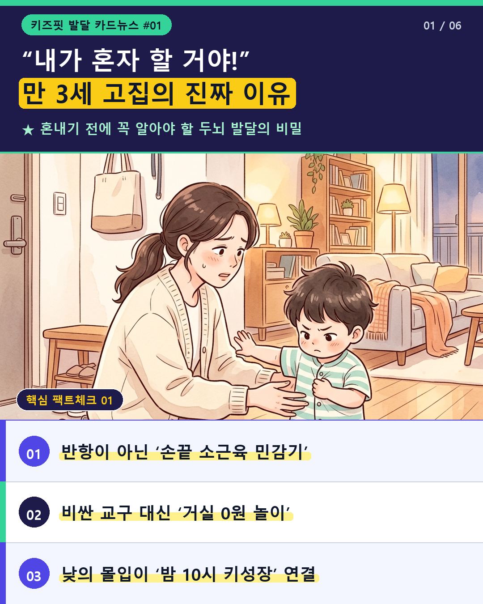
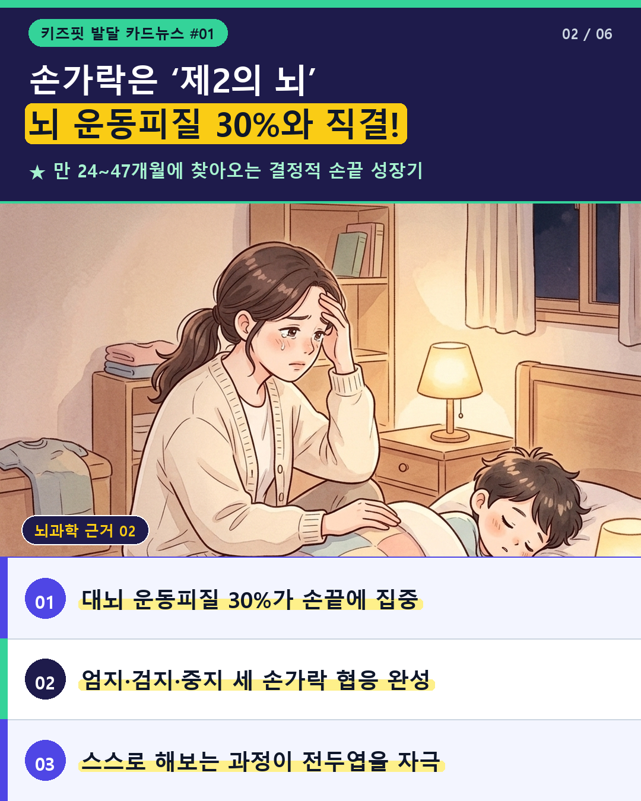
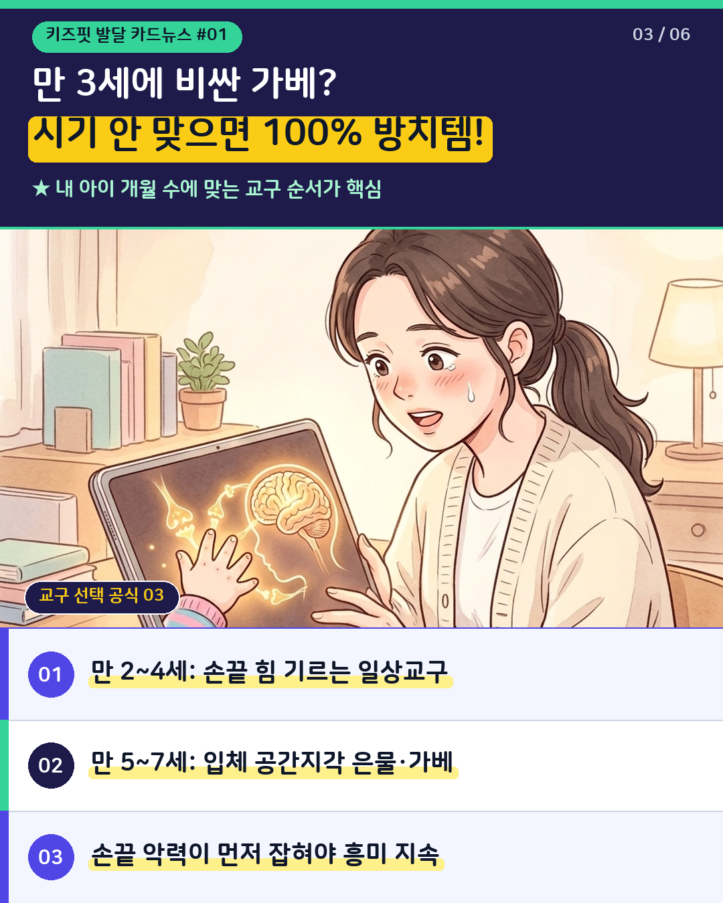
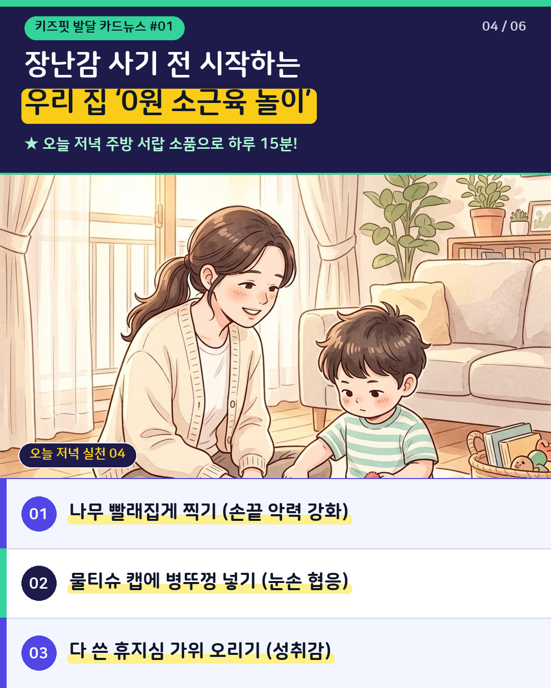
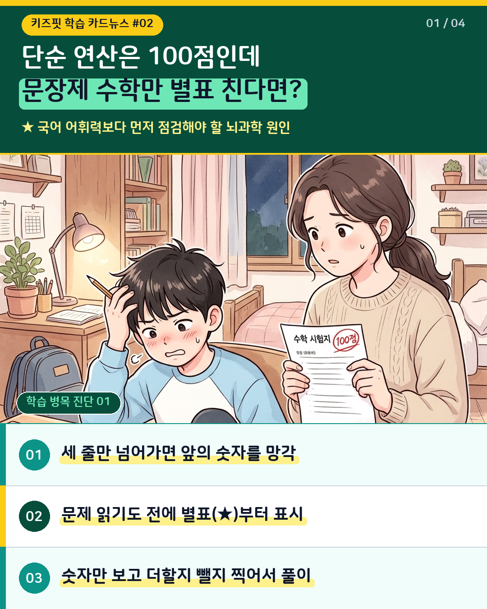
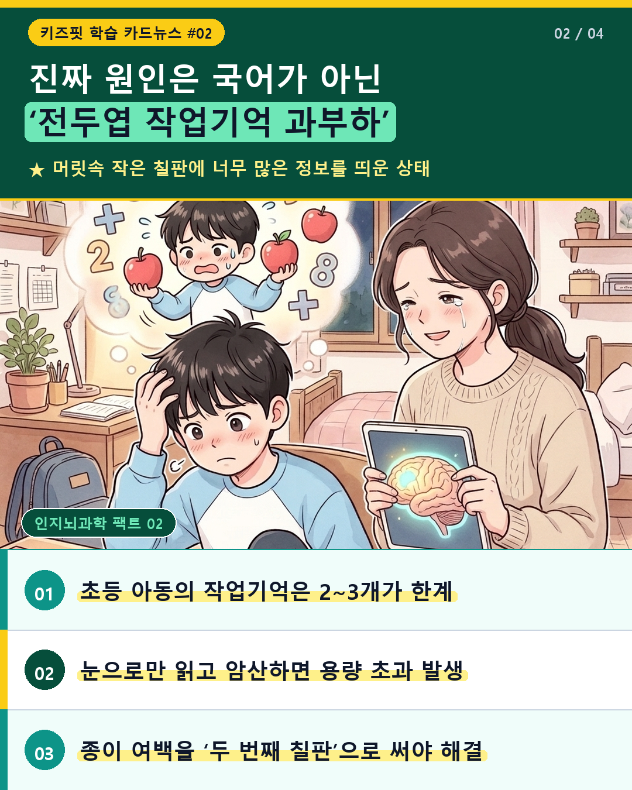
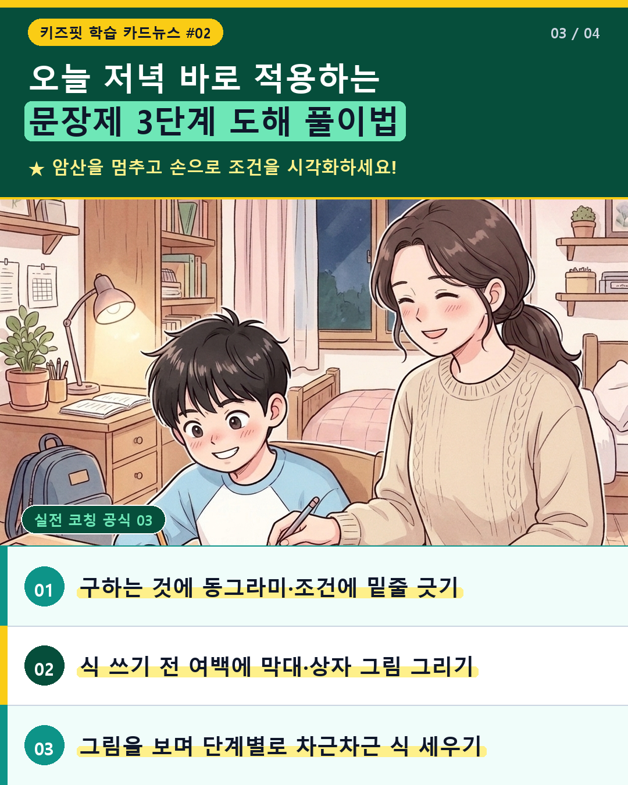
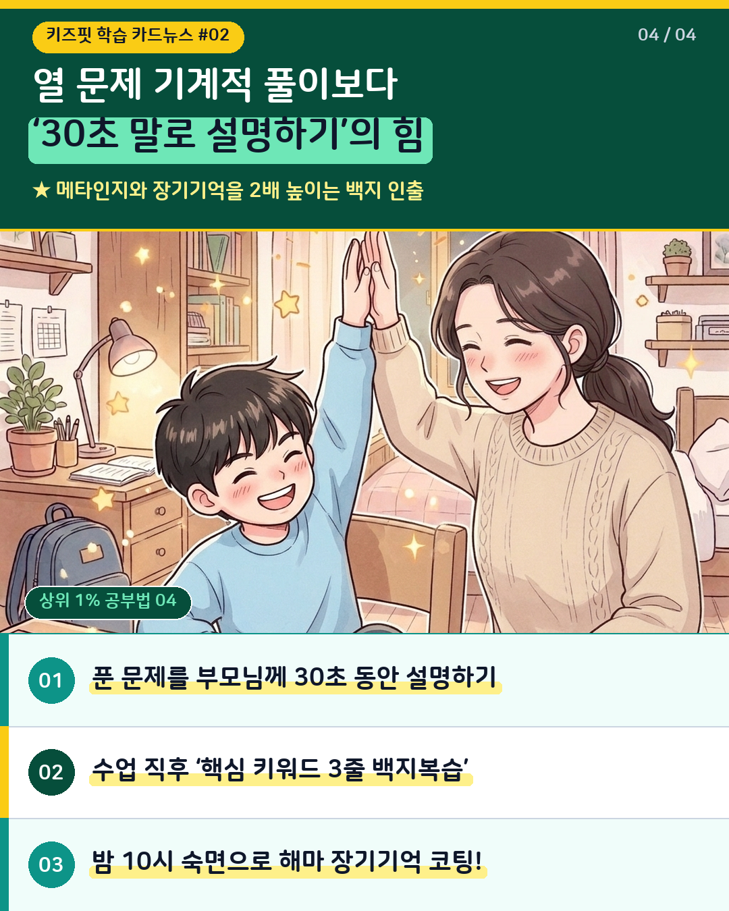
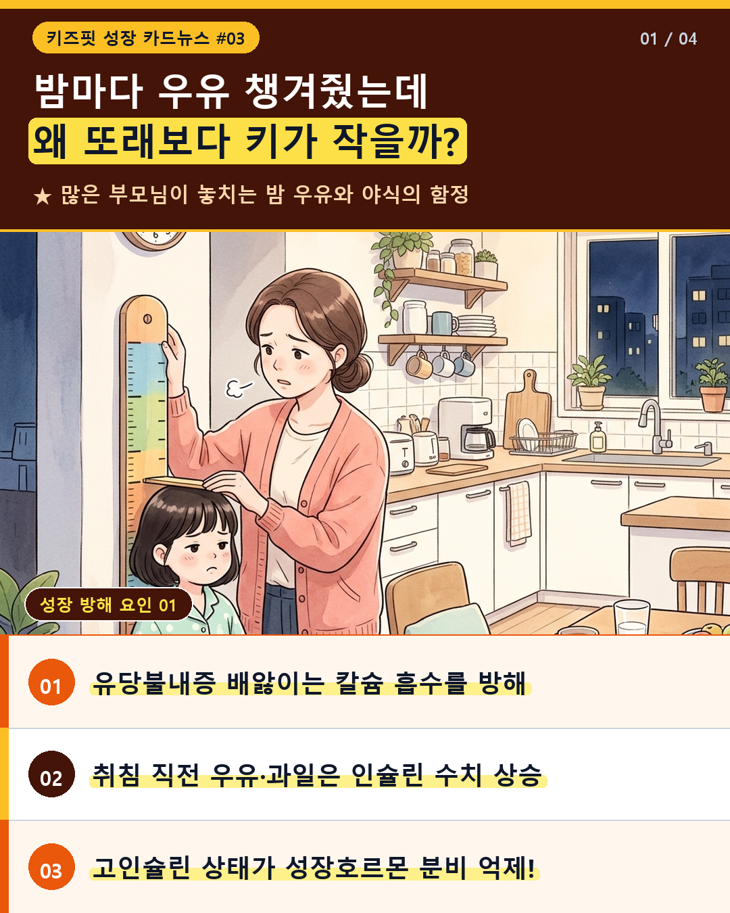
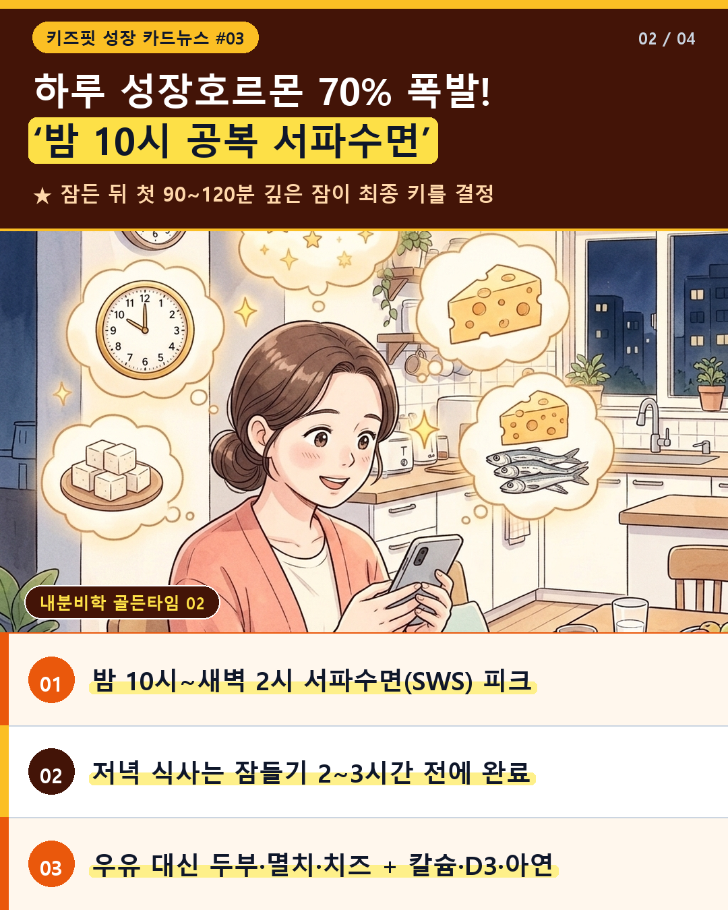
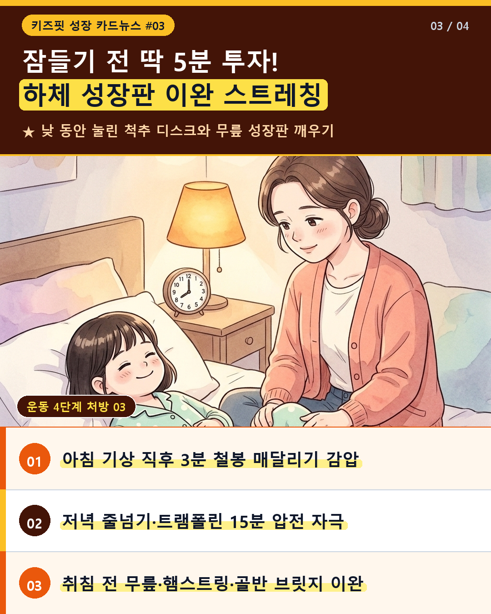
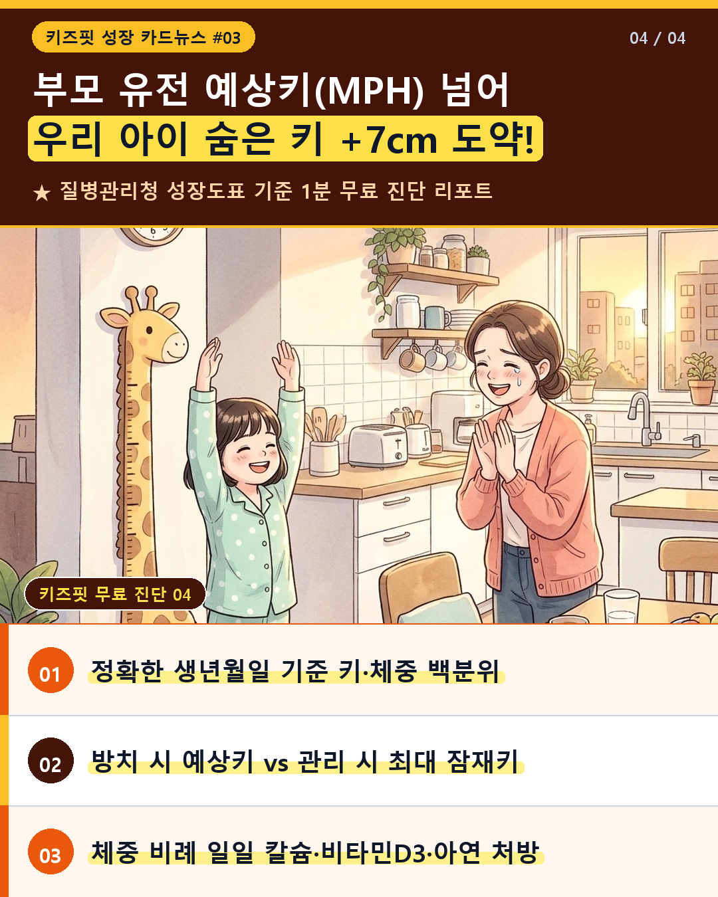